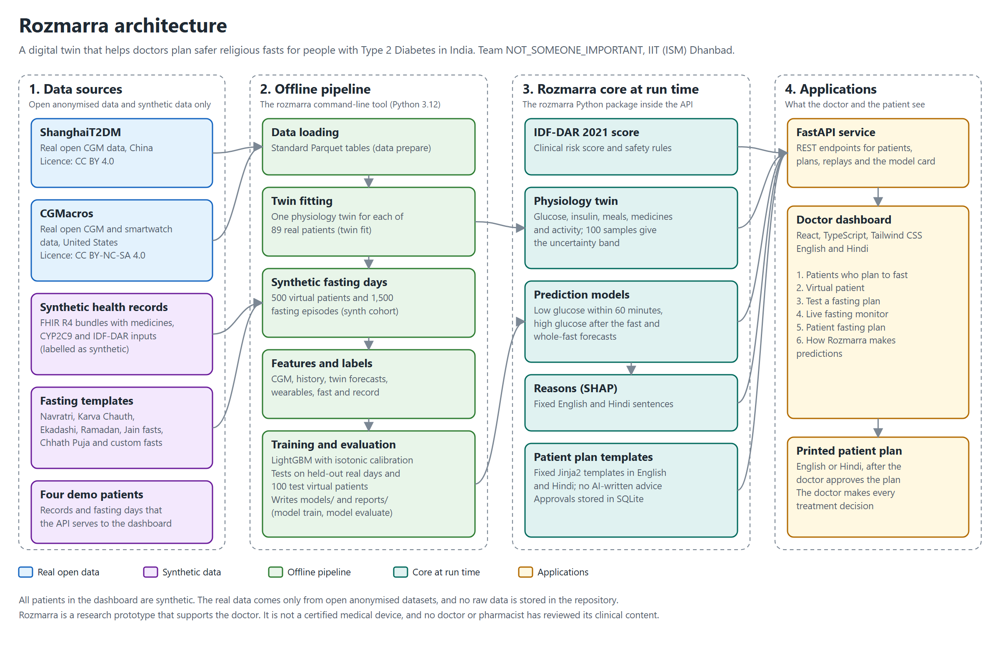
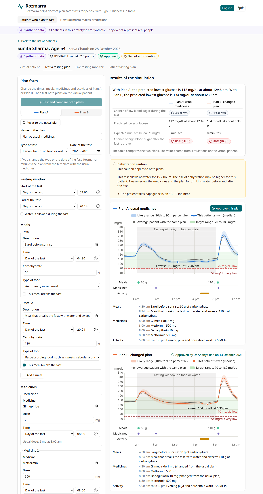
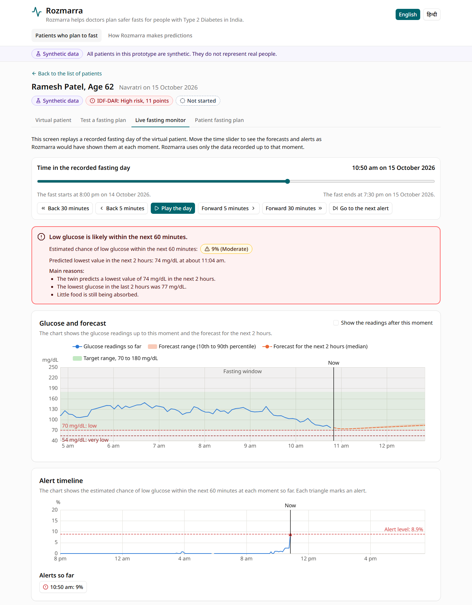
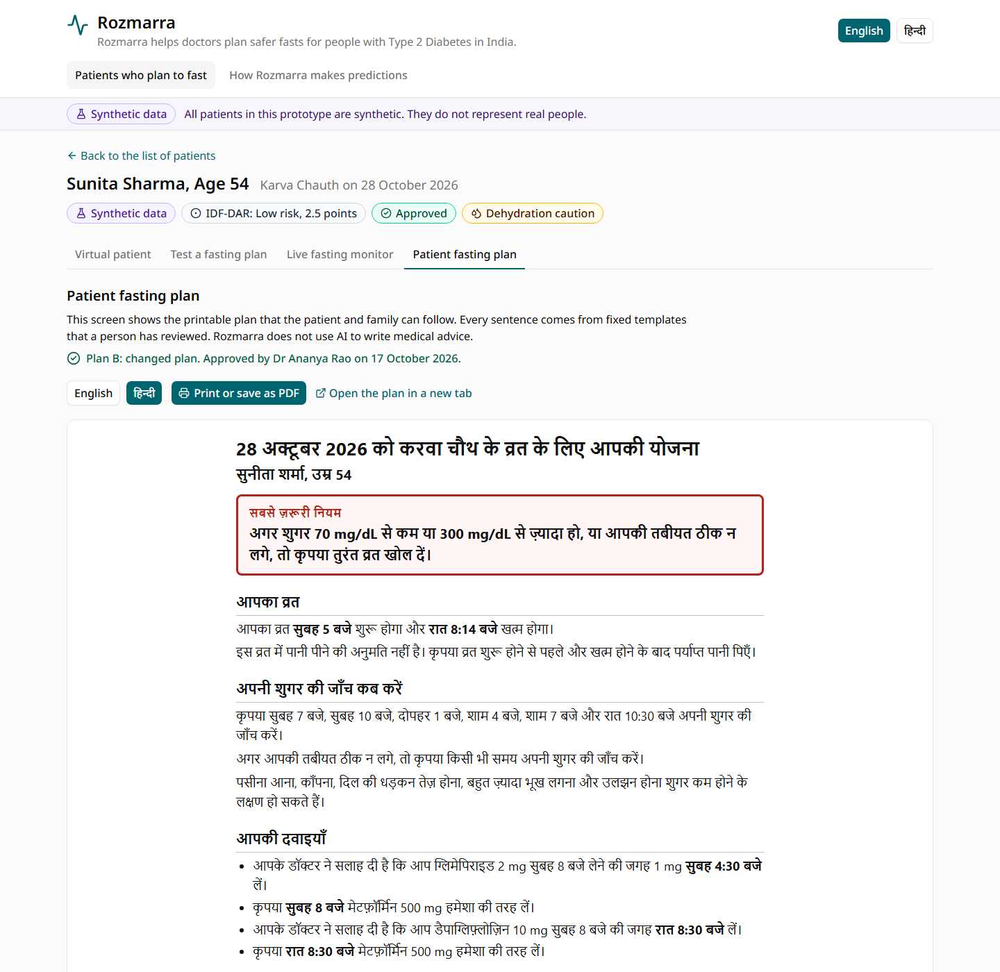

Rozmarra helps doctors plan safer fasts for people with Type 2 Diabetes in India.
Team NOT_SOMEONE_IMPORTANT, Indian Institute of Technology (Indian School of Mines) Dhanbad
Shivansh Gautam (team leader), Aman Soni and Divy Sharma
Rozmarra is a research prototype. It is not a certified medical device, and it must not be used to make decisions about real patients.
people in India have diabetes, and 136 million have prediabetes (ICMR-INDIAB, 2023).
of 300 adults with Type 2 Diabetes in North India had fasted in the previous year (2020 study).
of them had discussed their diet with a doctor or dietitian before fasting, and only about 4% had checked their glucose during the fast.
Navratri, Karva Chauth, Ekadashi, Ramadan, Jain fasts and Chhath Puja are a part of everyday life for millions of families. Fasting is a personal and religious decision. Rozmarra aims to help the doctor make each fast safer, and it never judges the decision to fast.
Sulfonylureas and insulin keep lowering glucose when a person does not eat for many hours. A slow CYP2C9 gene variant keeps glimepiride in the body for longer.
Some fasts last from sunrise to moonrise, and some do not allow water. People who take SGLT2 inhibitors may become dehydrated.
The meal that breaks the fast is often large and sweet, and it can cause high blood sugar in the hours that follow.
The EPIDIAR study of 12,243 people in 13 countries found that severe low blood sugar needing hospital care was 7.5 times more common during Ramadan for people with Type 2 Diabetes than in other months.
The doctor tests a fasting plan on the patient's virtual twin and compares two options, such as a lower dose. Rozmarra shows the glucose curve with its uncertainty band.
Rozmarra estimates the chance of low blood sugar in the next 60 minutes from the recent CGM readings, the smartwatch data and the twin. Each alert lists three reasons.
The doctor approves one plan. Rozmarra prints a plan in English or Hindi with the times to check glucose and the rule for breaking the fast.
Rozmarra never changes medicines by itself. The doctor makes and approves every treatment decision.
| Data source | Type | Use |
|---|---|---|
| ShanghaiT2DM (CC BY 4.0) | Real open data | Fitting the twins and testing predictions on normal days |
| CGMacros (CC BY-NC-SA 4.0) | Real open data | Fitting the twins and testing the fusion of CGM and smartwatch data |
| Rozmarra synthetic cohort | Synthetic data | Simulated fasting days of 500 virtual patients for training and testing |
| Fasting pattern | Water allowed |
|---|---|
| Navratri: one meal a day in the evening | Yes |
| Navratri: fruit and milk during the day, with a vrat meal in the evening | Yes |
| Karva Chauth: no food or water from sunrise to moonrise | No |
| Ekadashi: fruit and milk, without grains or beans | Yes |
| Nirjala Ekadashi: no food or water from sunrise to the next sunrise | No |
| Ramadan: no food or water from dawn to sunset | No |
| Jain upvas: no food for the whole day, with boiled water during daylight | Yes |
| Jain ekasana: one meal a day, before sunset | Yes |
| Chhath Puja: about 36 hours without food or water | No |
| Custom fast: the doctor sets every time | Set by the doctor |
The fasting times come from sunrise, sunset and moonrise for the patient's city. The patient plan uses the patient's own word for the fast, such as व्रत, उपवास or रोज़ा.
| Horizon | Twin | Last glucose value |
|---|---|---|
| 30 minutes | 14.5 mg/dL | 16.0 mg/dL |
| 60 minutes | 23.9 mg/dL | 26.8 mg/dL |
| 120 minutes | 30.2 mg/dL | 38.8 mg/dL |
On the Parkes error grid for Type 2 Diabetes, 99.97% of 6,301 forecasts 30 minutes ahead fell in zones A and B, and 97.2% fell in zone A.
Low glucose is likely within the next 60 minutes.
Estimated chance: 9% (Moderate). Predicted lowest value in the next 2 hours: 74 mg/dL at about 11:04 am.
SHAP finds the main reasons, and fixed English and Hindi sentences describe them.

Held-out days of 89 real patients, with five-fold cross-validation grouped by person. These days contain no fasts.
500 virtual patients with 1,500 fasting episodes. The models learned from 400 patients and were tested on 100 patients they had never seen.
The model for high blood sugar, trained only on simulated fasts, was applied to 244 real meals that came after at least 8 hours without food.
| Measure | Result | Target | Status |
|---|---|---|---|
| Low blood sugar within 60 minutes, real normal days (AUROC) | 0.943 (0.919 to 0.964) | 0.80 or higher | Met |
| Twin forecast error compared with the last glucose value | Lower at 30, 60 and 120 minutes | Lower at every time | Met |
| 30-minute forecasts in zones A and B of the Parkes error grid | 99.97% | 95% or more | Met |
| Value of combining data streams, real normal days (AUPRC) | Full model 0.247, CGM only 0.311 | Full model higher | Not met |
| High blood sugar after a real meal that ends a night without food (AUROC) | 0.828 (0.725 to 0.903) | No target | Reported |
| Measure | Result | Status |
|---|---|---|
| Low blood sugar within 60 minutes (AUROC) | 0.990 | Met |
| Events detected in time (target 80%) | 88% | Met |
| False alerts per patient per fasting day (target 2) | 1.9 | Met |
| Median warning time (target 30 minutes) | 25 minutes | Not met |
| High blood sugar after the fast (AUROC) | 0.958 | Met |
| Whole-fast forecast of low blood sugar (AUROC) | 0.973 | Reported |
The twin also created the simulated days, so these results partly reflect the team's modelling assumptions.
The full model scored higher than every model that uses one data stream, such as CGM data only or wearables alone. The twin alone scored higher than the full model, partly because the twin created these days.

Synthetic patient
Sunita Sharma, Age 54, Karva Chauth

Synthetic patient
Ramesh Patel, Age 62, Navratri

A study with Indian patients during real festival fasts would test the predictions and the alert levels, with clinicians reviewing the content.
Health records could come from the Ayushman Bharat Digital Mission through FHIR, with the patient's consent.
The team would add more regional fasts and plans in more Indian languages, such as Marathi, Bengali and Tamil.
A real product would also need approval as a medical device, for example from the Central Drugs Standard Control Organisation (CDSCO).
Team NOT_SOMEONE_IMPORTANT, Indian Institute of Technology (Indian School of Mines) Dhanbad
| Member | Role |
|---|---|
| Shivansh Gautam | Team leader. Leads the digital twin and the prediction models. |
| Aman Soni | Leads the data loaders, the synthetic data, the API and the dashboard. |
| Divy Sharma | Leads the fasting templates, the architecture diagram, the presentation, the model card, the data card and testing. |
The team thanks the authors of ShanghaiT2DM and CGMacros for sharing open data, and Happiest Health for organising the Digital Twin Challenge 2026. The code is released under the Apache License 2.0.